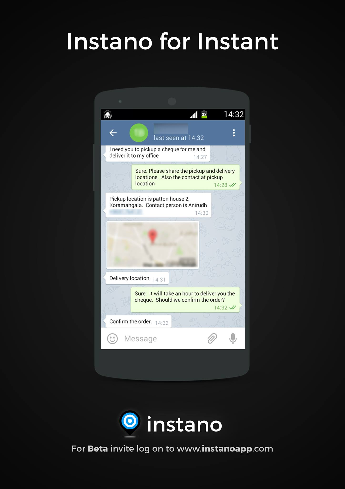
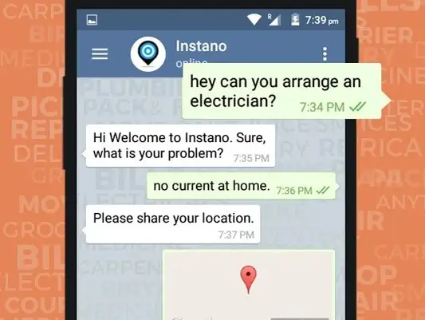

<div id="project">
	<section class="content">
		<div class="block-content">			
			<div class="project-title">
				<h4>Instano</h4>
				<p>Enterprise Web / Mobile App</p>
			</div>
			<p class="project-description">Instano was a chat based application that renders on-demand delivery of products and services. Your Personal Assistant - now in your pocket! We are live in Bangalore, and will be operational in more cities soon. Is your rusty and busy life making shopping a cumbersome job? Well, then Instano is the solution! Be it milk, groceries, eatables or any other product you can think of, Instano is always at your service. We provide you with all your day-to-day needs and amenities. Do you ever fall short of a spice or any other ingredient right in the middle of cooking a delicacy? Do you face electricity issues midnight? Does your flush leak all the time? Do you fall sick and run short of medicines? If you’re a victim to these, then sit back on your comfy couch and ask Instano!</p>
			<div class="project-media">
				
				
				
			</div>        
		</div>
	</section>
 </div>

